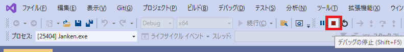
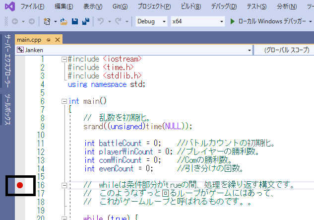
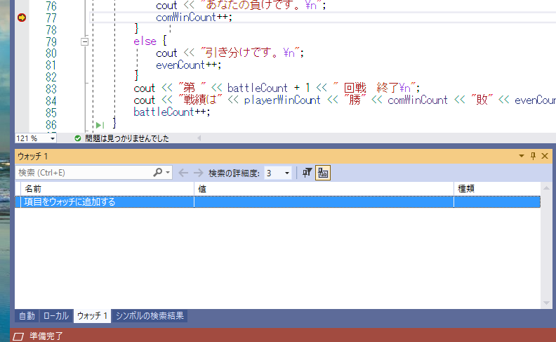

大規模なC++の開発において、デバッガの利用は欠かせません。 このチャプターではMicrosoft社が提供している統合環境、VisualStudioのデバッガの機能について学んでいきます。 この節では二つのプログラムを使用します。次のURLからプログラムをダウンロードしておいてください。
デバッガを使うためには、プログラムをデバッガありで実行する必要があります。
「デバッガありでの実行」は図1.1のボタンをクリックするか、ショートカットキーのF5を入力することで行えます。
図1.1
デバッガありで実行開始したプログラムはデバッガの停止ボタンを押すことで停止することができます(図1.2)。 デバッガの停止はショートカットキーのshift+F5でも停止することができます。 図1.2 
ブレイクポイントを設置することで実行中のプログラムを停止することができます。
プログラムの処理の流れの確認や、後述するウォッチ機能を利用しての変数の値などを行うときに頻繁に利用する機能です。
ブレイクポイントは図1.3のようにプログラムを停止させたい行をマウスでクリックすることで設置することができます。
また、ショートカットキーのF9を入力することでも設置することができます。
図1.3  ブレイクポイントの解除は、解除したいブレイクポイントをマウスでクリックするかF9を入力することで解除することができます。 また、ブレイクポイントで停止したプログラムを再開するには、図1.4の「続行」をクリックするか、ショートカットキーのF5を入力してください。
じゃんけんゲームのプログラムでデバッガの機能を利用して、勝利したときのif文の処理が正しく実行されているか確認してみましょう。 Sample_01/Janken.slnを立ち上げてください。
main.cppの69行目にブレイクポイントを設置してください(図1.5)。
図1.5

プログラムをデバッガありで実行して、じゃんけんゲームをプレイしてみてください。
ブレイクポイントがうまく設置できていると、じゃんけんに勝利したときに図1.6のようにプログラムが停止するようになります。
図1.6

続行ボタンを押してプログラムを続行してください。
ここからは、プログラムのステップを進めるための機能を見ていきます。 まずはステップオーバーです。 ステップオーバーはブレイクポイントで停止させたプログラムを１行進めることができます。 ステップオーバーはメニューの「デバッグ/ステップオーバー」で実行できます(図1.7)。ショートカットキーのF10でも実行できます。
図1.7
 ステップオーバーは関数の中には入らずにステップを進めるため、ステップオーバーと呼ばれます。
ステップオーバーは関数の中には入らずにステップを進めるため、ステップオーバーと呼ばれます。
ステップインもプログラムのステップを１行進めるのですが、こちらはステップオーバーとは違い、関数の中に入ることができます。
ステップインはメニューの「デバッグ/ステップイン」で実行できます(図1.8)。
ショートカットキーのF11でも実行できます。
図1.8

ステップアウトは関数を抜けることができます。
ステップアウトはメニューの「デバッグ/ステップアウト」で実行できます(図1.9)。
ショートカットキーのshift + F11でも実行できます。
図1.9

では、ハンズオンで各種ステップ実行を試してみましょう。 先ほどのハンズオンでじゃんけんに勝利した際にブレイクポイントを設置していると思いますので、 一旦そこのブレイクポイントでプログラムを停止させてからステップ実行をしていきましょう。 では、まずはプログラムをデバッガありで実行して、じゃんけんゲームをプレイして、69行目のブレイクポイントでプログラムを停止させてください。
プログラム実行中に、プレイヤーの体力など、変数の値がどうなっているのか確認したい場合があります。 このようなときに使える機能がウォッチです。 ウォッチを使うためには、ブレイクポイントを設置してプログラムを停止させる必要があります。 プログラムが停止すると、その時点での変数の値を確認することができます。 ウォッチはメニューの「デバッグ/ウィンドウ/ウォッチ/ウォッチ1」から開くことができます(図1.10)。 ウォッチを開けると図1.11のように画面下部にウォッチ画面が表示されているはずです。
図1.10

図1.11 
ウォッチウィンドウ値を確認したい変数を入力 or ドラッグアンドロップすると、変数の値を確認することができます(図1.12)。
図1.12

(注意：ウォッチウィンドウはデバッグありで実行中しか表示されないので注意してください。メニューにも出てきません。)
では、ウォッチを使ってみましょう。 また、じゃんけんゲームをデバッガありで起動してプレイしてください。 するとじゃんけんで勝利したときにプログラムがブレイクポイントで停止すると思いますので、停止したら変数player、comをウォッチに追加して値を確認してください。
次の評価テストを行いなさい。 評価テストへジャンプ
Question_01のじゃんけんゲームはいくつかプログラムの間違い、バグがあります。 デバッガの機能を活用して、バグの原因を見つけ出してバグを修正しなさい。